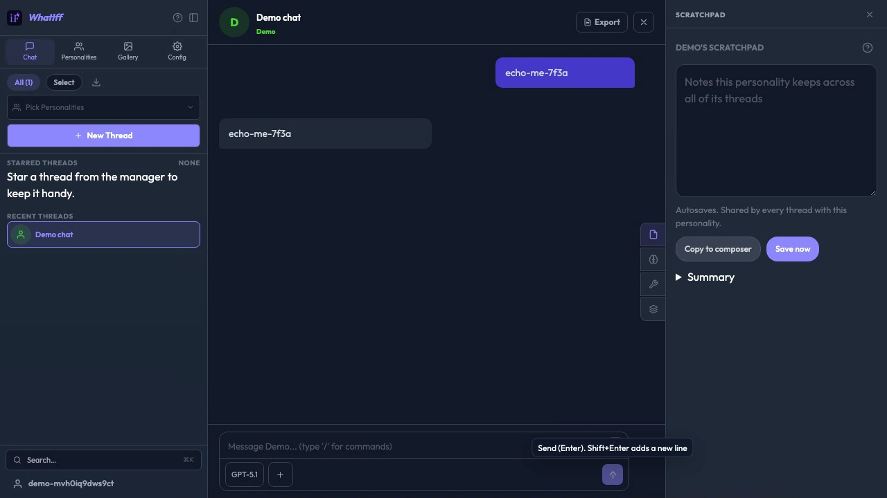

Stop Reviewing Your Agent's
Flaky Playwright Tests
Turn ESLint into the always-on reviewer your agents can't ignore
 John Hill ·
John Hill · @unlikelyzero · maintainer, eslint-plugin-playwright
In the next 45 minutes
What you'll leave with
- The problemwhy agent-written Playwright tests flake, and why review doesn't catch it
- The mechanisman ESLint hook that lands the fix instruction at the moment of the mistake
- The examples7 rules: the shortcut the agent took, and the test after the lint hook
- Rolling it outturn every rule on today without fixing anything today
We'll pause for questions after rule 2 and at the end — drop them in the Q&A panel as they come.
Agents write tests faster than you can review them
Ask any agent to make a failing test pass. It reaches for whatever works right now:
await page.waitForTimeout(2000);
await page.locator('form.composer > div > div > button').click();
await page.locator('button.send').first().click();
await button.click({ force: true });
if (await banner.isVisible()) await banner.click();
Green today. Three weeks later it's the flake blocking someone else's PR.
Prompts are suggestions. Lint is a verdict.
AGENTS.md / .cursorrules
- Diluted as context grows
- Agents route around them
ESLint rule
- Same verdict every time
- Error lands at the moment of the mistake
Keep both — but make the prompt point at the verdict:
# AGENTS.md
Run `npm run lint` before you report a test as done. Every error is
a rule, and every rule has a doc — read it, don't suppress it:
https://github.com/playwright-community/eslint-plugin-playwright/tree/main/docs/rules
The mechanism · 1 of 2
Wire it in before a browser ever launches
// .claude/settings.json
{ "hooks": { "PostToolUse": [{
"matcher": "Edit|Write|MultiEdit",
"hooks": [{ "type": "command",
"command": "bash $CLAUDE_PROJECT_DIR/scripts/lint-hook.sh" }]
}]}}
Exit 2 + stderr → the fix instruction becomes the result of the agent's own edit.
Cursor: hooks.json → afterFileEdit · Copilot: pre-commit · Playwright MCP: same script in the tool wrapper.
The mechanism · 2 of 2
Rewrite messages as fix instructions
Stock
Unexpected use of page.waitForTimeout().
Rewritten
Remove page.waitForTimeout(). Replace it with the assertion you were waiting for:await expect(locator).toBeVisible()…
If nothing observable changes, there is nothing to wait for.
Same rule. One repairs on the first try. Where the verdict lands + what it says = the "linted" setup in every demo that follows.
The app in the videos
Meet what-iff

1 2 3 4- 1Recent threads
- 2Thread name in the header
- 3Your message, and the assistant's reply
- 4Composer:
Messagebox,Send messagebutton
- Open-source AI chat app: Angular front end, Go API
- Mock-LLM mode: the assistant echoes what you send, so replies are predictable
- Each video: fresh account, seeded chat, type, send, check the reply
- Each runs under one injected flake seam (a slow API, a late banner, renamed CSS), named on the rule's first slide
- left the agent's first draft · right after the lint hook
Before the rollout
Unfortunately, 80% of bad tests need an app change
The ratchet report's app-side list
#chat-composer-input(5 uses) → the box has no name:<label>Message</label>button.composer__send→ the icon button has no name:aria-label="Send message"#demo-announce→ the banner is adiv:role="dialog"+ a name- No name for the test is no name for a screen reader: the suppressions file is your a11y backlog
QA can make that change now
- A coding harness opens the app repo as easily as the test repo
- The lint message already names the fix
- The agent makes it in the app; dev reviews a small PR instead of triaging a ticket
Rolling this out
You don't have to boil the ocean
Turn every rule on today. Fix nothing today.
npx eslint tests --suppress-all # freeze what exists → eslint-suppressions.json
git add eslint-suppressions.json # commit the debt, with a number on it
- Every rule still runs on every file. ESLint only stays quiet about the counts in that file.
- A new violation — the agent's next shortcut — isn't in the file. It fails.
- An old one that gets fixed leaves a stale entry.
--prune-suppressionsdeletes it.
The number only goes down. That's the ratchet.
Live: the ratchet on this repo's baseline
$ npm run ratchet:init
✔ froze 40 existing violations in eslint-suppressions.json. Commit it. New violations now fail.
$ sed -i 's/click({ force: true })/click()/' tests/02-force-click.spec.ts # someone fixes one
$ npm run ratchet:tighten
✔ pruned stale suppressions. The number only goes down. # 40 → 39
$ echo "await page.waitForTimeout(500);" >> tests/03-nth-first.spec.ts # agent adds one
$ npm run ratchet:tighten
✖ new violations outside the suppressions file — fix them, do not re-run init
scripts/ratchet.mjs — thin wrapper over --suppress-all / --prune-suppressions. Run tighten in CI.
The workflow with your dev team
$ npm run ratchet:report
40 frozen violations on 21 lines
TEST-SIDE (8) — fix in the spec, no app change. Hand these to the agent.
tests/01-hard-wait.spec.ts:13 playwright/no-wait-for-timeout
tests/02-force-click.spec.ts:15 playwright/no-force-option
tests/06-conditional.spec.ts:16 playwright/no-conditional-in-test
…
APP-SIDE (13 uses of 9 selectors) — element has no accessible name. One app PR per selector.
5× #chat-composer-input → <label for="chat-composer-input">Message</label>
1× button.composer__send → aria-label="Send message"
1× .chat-page__thread-name-trigger h1 → it's already an h1: getByRole('heading')
…
- Test-side → the agent, with the hook on. Done in an afternoon.
- App-side → QA, with the agent, in the app repo: one small PR per selector. Add the name, delete the raw locator,
ratchet:tighten. Dev reviews. - Suppressions file shrinks in every PR. Nobody argues about "turning on lint". It's already on.
Takeaways
Five things to leave with
- Prompts are suggestions. Lint is a verdict.Keep AGENTS.md — but make it point at the rule docs, and make the rule the gate.
- Put the verdict where the agent is.A hook on the edit, not a comment on the PR. Same second, same file, same line.
- The message is the fix.Rewrite rule messages to say what to do instead; the agent repairs on the first try.
- Turn everything on today. Fix nothing today.
--suppress-allfreezes the debt; the number only goes down. - 80% of raw locators are an app bug.No accessible name = not testable = not accessible. The suppressions file is your a11y backlog with line numbers.
Any questions?
Get started in your project
github.com/playwright-community/eslint-plugin-playwright
the rules
github.com/unlikelyzero/stop-reviewing-your-agents-flaky-tests
config, custom rule, hook, ratchet, flake seams, this deck
npm i -D eslint eslint-plugin-playwright typescript-eslint
# copy eslint.config.mjs, eslint-rules/, scripts/lint-hook.sh, .claude/settings.json
John Hill · @unlikelyzero · with ThinkSys